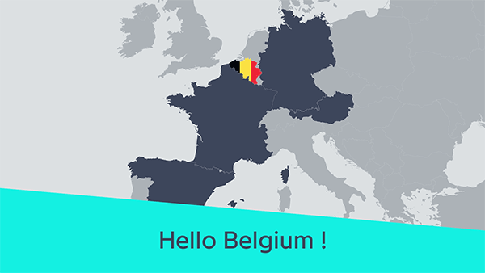
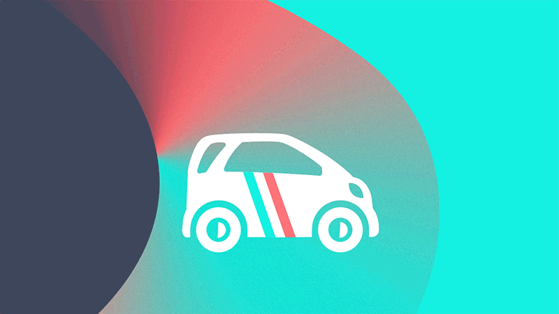
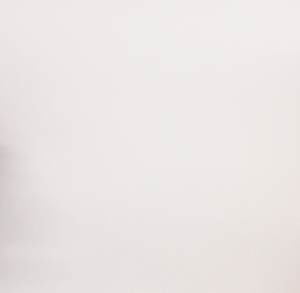
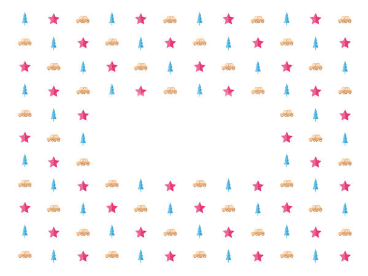

Drivy
Graphic & Motion Design
Work & Study
From September 2015 to September 2016, I worked at Drivy as Graphic Designer Associate. It was a 12-month work study contract (one week at Drivy, one week at school). As part of the marketing team, I was in charge of graphic design for all non-product assets. I worked with the brand manager on conception and production of the communication & marketing supports: newsletters, goodies, online campaigns. Also, I created some brand content for the social networks such as illustrations and motions to show the new features.
2 logos in 1 year
Even though I was in Paris, I provided support to foreigner teams based in Austria, Belgium, Spain and Germany by adapting content and campaigns in local languages. Don't panic if you see two identities… Before March 2016, Drivy's logo was a little pink car. Then Drivy was rebranded by Designstudio...
Year
September 2015 - September 2016
Lire en Français 🇫🇷